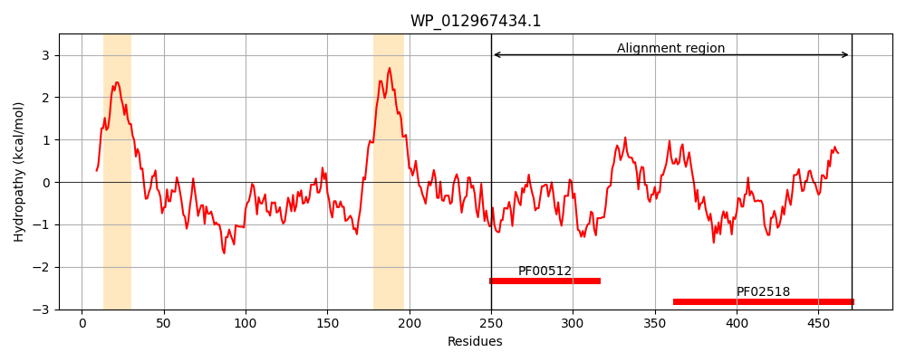
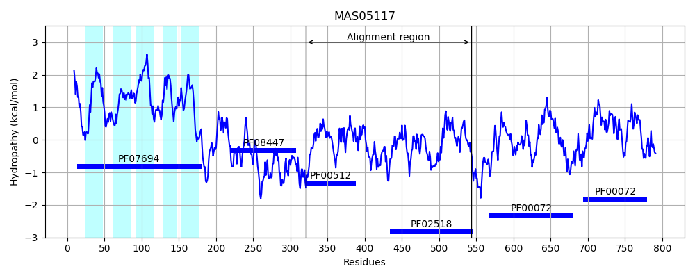
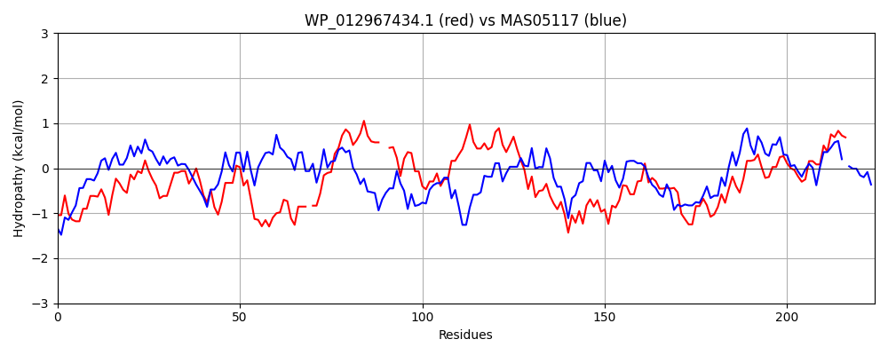

Hit Accession: MAS05117
Hit TCID: 9.B.34.1.7
Hit Description: gnl|BL_ORD_ID|6460 gnl|TC-DB|MAS05117.1|9.B.34.1.7 hybrid sensor histidine kinase/response regulator [Ahrensia sp.]
Mach Len: 224
e:0.000000
Query TMS Count : 2
Hit TMS Count: 5
TMS-Overlap Score: 0.600000
Predicted Substrates:None
BLAST Alignment:
Score: 254 , Bit scores: 102 bits, E-value: 4.1e-23, Alignment length: 224, Percentage identity: 29
Query: 250 RHQFLRHLSHELKTPLASMREGTELLADRVAGPLTPEQQEIVEILDSSSRNLQKLIEQLLDYNRKQADS-PVAREAVDLVDLVENVVAA--HSLPARAKLMHTELTLQARRCLAEPALLISVMDNLYSNAVHYGAESGNIRIHSYRHGEQVRIDVANSGEPIPAAEKNMIFEPFYQGSHQRKGAVKGSGLGLSIARDCVRQMQGELSLVDAPAGQVCFRITLPS 470
+ F+ +SHEL+TPL S+R L++ +G + P+ +++I +S L L+ +LD R P DL ++V V A + +P + + E + L +P V+ NL SNA+ + +SG +RI R +++ + V+++G IP + IF F + + +V G+GLGLSIA+ V ++ G + + AG V F + LP+
Sbjct: 321 KDDFISTVSHELRTPLTSIRGALGLMSSGASGEVGPKMSNLIKIAHKNSERLVALVNDILDIERITTGRLPFTFGLHDLGEMVHAGVDASRNYMPEKNVTLVVEDNFHGEKILTDPERFHQVLMNLLSNAIKFSPDSGQVRIAIGRRQDEIVVSVSDNGVGIPESFHERIFGKFERADNALSKSVNGTGLGLSIAKAIVERLNGRIWFETSGAGSV-FHVALPA 543 | Protein Hydropathy Plots: |
|---|
|  |  |
Pairwise Alignment-Hydropathy Plot:
|
|---|
|  |